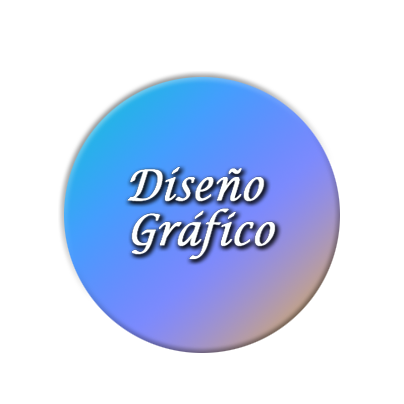
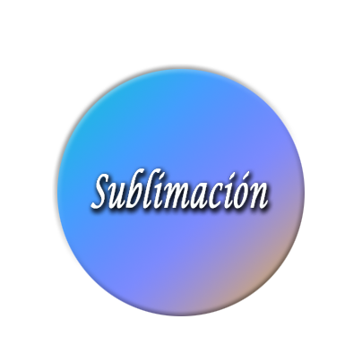

|  |  |
Realicé mis estudios de diseño gráfico en el Instituto Tecnológico de Cartago. Entre los trabajos que se presentan a continuación están: banners, volantes, brocheurs, calcamonías, licencias deportivas, y tarjetas de membresías, esta última ganó un reconocimiento por mejor diseño de organización, por parte de la FIA(Federación Internacional Automovilistica.).
Actualmente estudio Programación de páginas web, en el Instituto Nacional de Aprendizaje. Los lenguajes utilizados son Html, CSS, Javascript.
Además manejo los sistemas Mac y PC, y utilizo los programas CS4, CC. de Adobe(Ilustrator, Photoshop, Indesign, Dreamweaver).
Puede localizarme al número: 2237-1472, Celular:8712-1247
Correo: gsalazarcr2002@yahoo.com gsalazarlarios@gmail.com
http://jgsl79.daportfolio.com